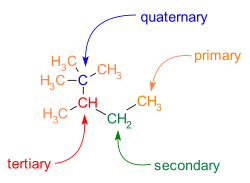

Química Orgânica e suas mudanças
Abaixo um contúdo para fins de estudo e prática da química, aqui você aprende como funciona a manipulação de materias para a produção de materias novos.
Parágrafos
Ligação de Carbonos
Uma ligação de carbono é uma ligação covalente entre dois átomos de carbono . [ 1 ] A forma mais comum é a ligação simples: uma ligação composta por dois elétrons, um de cada um dos dois átomos. A ligação simples carbono-carbono é uma ligação sigma e é formada entre um orbital hibridizado de cada um dos átomos de carbono. No etano, os orbitais são orbitais hibridizados sp 3, mas ligações simples formadas entre átomos de carbono com outras hibridizações ocorrem (por exemplo, sp 2 para sp 2 ). De fato, os átomos de carbono na ligação simples não precisam ter a mesma hibridização. Os átomos de carbono também podem formar ligações duplas em compostos chamados alcenos ou ligações triplas em compostos chamados alcinos. Uma ligação dupla é formada com um orbital hibridizado sp 2 e um orbital p que não está envolvido na hibridização. Uma ligação tripla é formada com um orbital hibridizado sp e dois orbitais p de cada átomo. O uso dos orbitais p forma uma ligação pi. [ 2 ]

Cadeias e Ramificações
O carbono é um dos poucos elementos que podem formar longas cadeias de seus próprios átomos, uma propriedade chamada catenação. Isso, aliado à força da ligação carbono-carbono, dá origem a um número enorme de formas moleculares, muitas das quais são elementos estruturais importantes da vida; portanto, os compostos de carbono têm seu próprio campo de estudo: a química orgânica.

2,2,3-trimetipentano